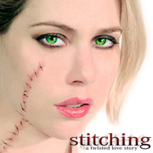

past performance |
 | |
| Stitching A twisted love story by Anthony Neilson, directed by Timothy Haskell, Meital Dohan, Gian Murray Gianino |
||
creative:
cast:
|
The controversial play that shocked the UK. Stu and Abby love each other so madly, they're driving each other crazy. Stitching follows the increasingly disturbing and inventive games the couple plays in order to connect. As they circle and test each other, they role-play with reality and fantasy to the point where even they don't seem sure what is real anymore. When Abby discovers she's pregnant, the choices they make will haunt them forever. The visceral poetry and physicality between the lovers creates a surprisingly tender, often humorous, brutal romance. Stitching is a complex love story that takes a bracing look at the startling casualties of modern romance. "Anthony Neilson's Stitching is one of the most exciting plays of the yearä I left the theatre with my pulse, and my mind racing." - Time Out London Visit Website: http://stitchingtheplay.com |
upcoming performances |
|||
 |
|||
| EVQ Film Festival 2018 August 20-25 |
|||
performance archives |
|||
| 2018 | 2017 | 2016 | 2015 |
| 2014 | 2013 | 2012 | 2011 |
| 2010 | 2009 | 2008 | 2007 |